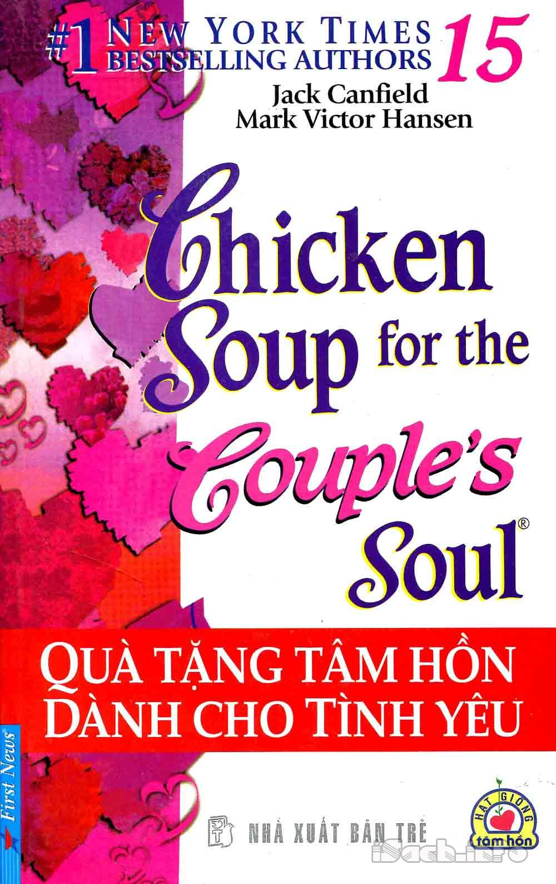

Quà Tặng Tâm Hồn
By Đại Kỷ Nguyên

- Người Anh Dại Khờ Và Câu Chuyện Xúc Động Về Tình Anh Em.
- Xót Xa Khi Biết Lý Do Việc Mẹ Chồng Luôn Bắt Tôi Đi Rắc Gạo Ở Đầu Ngõ Mỗi Tối.
- Câu Chuyện Cậu Bé Và Cây Cổ Thụ Cho Thấy Ý Nghĩa Nhân Sinh.
- Tâm Hồn Cao Thượng Trong Gia Cảnh Bần Hàn, Làm Sao Có Thể Đo Đếm?.
- Đạo Vợ Chồng Sẽ Trọn Vẹn Khi Bàn Tay Chỉ Nắm Một Bàn Tay.
- Tình Người Qua Bát Mì Đêm Giao Thừa.
- Bí Mật Của Cô Gái Và Chàng Trai Bị Bệnh Ung Thư.
- Câu Chuyện Hai Anh Em Đi Tìm Ngọc: Trên Đời Có Gì Là Hoàn Mỹ Không?.
- Đừng Vội Đánh Giá Hành Động Bề Ngoài Của Người Khác.
- Niềm Hy Vọng Của Cậu Bé Và Lời Nói Dối Của Ông Chủ Tiệm Tạp Hóa.
- Lặng Người Khi Biết Lý Do Cha “Tranh Giành” Sự Sống Với Mình.
- Bạn Không Bao Giờ Quá Tuổi Để Thực Hiện Ước Mơ.
- 5 Câu Chuyện Ý Nghĩa Thay Đổi Cách Nhìn Về Cuộc Sống.
- Mối Lương Duyên Bất Ngờ Của Cô Gái Bán Mì Lương Thiện Và Chàng Trai Giàu Có.
- Vì Sao Không Nên Nhìn Vào Khuyết Điểm Của Người Khác?.
- 3 Câu Chuyện Cảm Động Lòng Người.
- Lửa Thử Vàng.
- Câu Chuyện Mùa Đông.
- Bông Hồng Đêm Giáng Sinh.
- Vươn Lên Sau Vấp Ngã.
- Bữa Đại Tiệc Trong Nhà Vệ Sinh.
- Hồ Nước Tâm Hồn.
- Chiếc Lá Hoàn Hảo.
- Ngã Rẽ Cuộc Đời.
- Câu Chuyện Về 2 Hạt Giống.
- Sức Mạnh Của Ý Chí.
- Trái Tim Yêu Thương.
- Ngưng Lại Những Điều Đang Giữ Chân Bạn.
- Lá Thư Của Tổng Thống Lincoln Gửi Thầy Giáo Dạy Con Trai Ông.
- Câu Chuyện Một Hòn Than.
- Mong Bạn Sẽ Luôn Đủ.
- Câu Chuyện Chúa Tạo Ra Người Phụ Nữ.
- Tại Sao Các Con Sông Đều Uốn Khúc?.
- Trong Cuộc Đời Này, Ít Nhất Hãy Một Lần Làm Kẻ Ngốc (Câu Chuyện Quả Táo Thần Kỳ Của Kimura).
- Nhặt Chiếc Nhẫn Rơi – Chuyện Cổ Tích Giữa Đời Thường.
- 10 Thứ Mà Tiền Không Thể Mua Được.
- Sự Thật Bất Ngờ: Phòng Riêng Là Nơi Thể Hiện Chân Thực Nhất Con Người Bạn.
- 4 Câu Chuyện Cổ Sâu Sắc Về Lòng Hiếu Nghĩa Và Đức Hi Sinh.
- Nguyên Nhân Thất Bại Của Rất Nhiều Người: Hai Cái Cây, Bạn Sẽ Chặt Cây Nào?.
- Người Rao Bán Hạnh Phúc.
- Lời Nói Có Thể Gây Ra Tổn Thương Như Thế Nào?.
- Số Mệnh Của Con Người Có Phải Đã Được Định Sẵn Từ Trước?.
- Nguyên Nhân Người Ta Lạc Lối: Câu Chuyện ‘Đường Rẽ, Mất Dê’.
- Câu Chuyện Đun Nước Sôi Nhưng Thiếu Củi.
- Khi Nào Mới Đến ‘Dịp Đặc Biệt’ Mà Bạn Mong Chờ?.
- Lương Thiện So Với Thông Minh Càng Khó Hơn.
- Sức Mạnh Của Tấm Lòng Lương Thiện.
- Sự Đối Lập Đáng Kinh Ngạc: 2 Gia Tộc Có Và Không Có Tín Ngưỡng Sau 200 Năm.
- Chú Rùa Đền Ơn Cứu Mạng Sau 16 Năm.
- Ba Điều Ước Cuối Cùng Của Alexander Đại Đế.
- Bữa Tối Đặc Biệt Và Cơ Hội Không Đến Lần Thứ Hai….
- Tại Sao Thượng Đế Không Ban Thưởng Cho Người Tốt?.
- Cá Tháng Tư: Lời Nói Dối Vĩ Đại Nhất.
- Đâu Là Giai Đoạn Đẹp Nhất Của Cuộc Đời Bạn?.
- Bài Thơ Diệu Kỳ Cậu Bé 14 Tuổi Viết Cho Thế Kỷ 21.
- Khi Tôi Buồn, Người Hàng Xóm Khuyên Tôi Một Câu Nói Sâu Sắc.
- Chuyện Ở Đời… Đừng Vội Phán Xét Ai.
- Người Giỏi Về Lắt Léo, Cuối Cùng Đều Là Hại Chính Mình.
- Hình Phạt Nặng Nhất.
- Bài Học Về Giáo Dục Trẻ: Cảm Ơn Cô Đã Cho Con Thấy Mình Còn Giá Trị!.
- “Chuyện Nhỏ Thôi, Không Sao Đâu”.
- Chiếc Taxi “5 Sao” Và Bài Học Thay Đổi Cuộc Sống.
- ‘Có Nhiều Người Đang Cần Đến Những Cánh Hoa Của Bà Hơn’.
- Đoạn Văn Làm Chấn Động Thế Giới Trên Tấm Bia Mộ Vô Danh Ở London.
- Bài Học Từ Khuôn Mặt Luôn Tươi Cười Rạng Rỡ.
- Thượng Đế Không Cho Ai Quá Nhiều.
- “Thượng Đế, Tại Sao Lại Khiến Tôi Bị Phá Sản Chỉ Trong Một Đêm?”.
- Bài Học Quý Báu Từ Người Phỏng Vấn Tuyển Dụng.
- Trách Nhiệm Của Vị Kiến Trúc Sư Của Đại Học Oxford 350 Năm Trước.
- Bạn Nhìn Thấy Gì Qua “Khung Cửa Sổ” Của Mình?.
- Thiên Thần Đẹp Nhất Trên Thiên Đường!.
- Con Sâu Qua Sông Bằng Cách Nào?.
- Hành Trình Của Một Quân Nhân Giúp Người Vợ Mù Tìm Lại Ánh Sáng.
- Cậu Bé Và Chú Chó Tật Nguyền.
- Chú Tiểu Và Hai Viên Gạch Xấu Xí.
- Người Mẹ Chột Mắt.
- Mahatma Gandhi Sẽ Làm Gì Khi Đánh Rơi Một Chiếc Giày Xuống Đường Ray?.
- Tôi Đi Hàn Quốc Phẫu Thuật Thẩm Mỹ….
- Tại Sao Người Anh Lại Không Thích Khoe Khoang?.
- Bóng Đêm Là Gì?.
- Thế Giới Này Đâu Thuộc Về Chúng Ta.
- Nhặt Được Nửa Triệu Đô, Lựa Chọn Của Nghệ Sĩ Nghèo Làm Mọi Người Ngả Mũ.
- Trái Tim Của Người Cha.
- Người Mẹ Kỳ Lạ!.
- Kẻ Trộm Xâu Chuỗi Của Phật Tổ.
- Đạo Đức – Thật Khó Để Đánh Giá Bất Kỳ Ai….
- Dùng 3 Bát Mì Để Dạy Con Bài Học Sâu Sắc.
- Những Mỹ Nhân Từ Chối Ngôi Vị Hoàng Hậu Trong Lịch Sử Việt Nam.
- “Nếu Con Du Học Về Đi Làm Thợ Chụp Ảnh Đám Cưới, Liệu Cha Có Thất Vọng Không?”.
- Bờ Vai.
- Lương Tâm Một Người Đáng Giá Bao Nhiêu?.
- Thời Gian Sẽ Trả Lời Ai Là Người Bình Thường, Ai Là Vĩ Nhân.
- Thiện Ý Một Câu Ấm Ba Đông, Lời Ác Lạnh Người Sáu Tháng Ròng.
- Mẹ Già Rồi, Xin Đừng Nói Những Lời Này Với Mẹ!.
- Phụ Nữ Thực Sự Mong Muốn Điều Gì Nhất? Câu Hỏi Hóc Búa Đối Với Rất Nhiều Người!.
- Thì Ra Thật Đơn Giản Để Giữ Cho Gia Đình Luôn Hòa Thuận….
- Trí Tuệ Của Cựu Tổng Thống Mỹ Thomas Jefferson:Người Đến Vì Tự Do.
- Mẹ Xem, Nhiều Người Chẳng Bao Giờ Có May Mắn Nhìn Thấy Em!.
- Biết “Cúi Xuống” Mới Là Trưởng Thành, Biết “Hạ Mình” Mới Là Cao Thủ.
- Cười Như Những Đóa Hoa.
- Lùi Một Bước Biển Rộng Trời Trong….
- Đây Là Những Lý Do Bạn Thực Sự Đang Hạnh Phúc Hơn 2 Tỷ Người Khác Trên Thế Giới.
- Đừng Cho Đi Một Cách Quá Dễ Dãi!.
- Dễ Và Khó Làm Trong Cuộc Sống – Bạn Đã Bao Giờ Suy Ngẫm Chưa?.
- Một Phụ Nữ Mất Chồng Muốn Tự Tử, Ông Lái Đò Hỏi Một Câu Khiến Cô Bật Cười!.
- Đừng Than Thân Trách Phận, Thực Ra Bạn Là Người Rất Giàu Có!.
- Con Nhện Ở Miếu Quan Âm.
- Đại Gia Đưa Kiều Nữ Đi Sắm Đồ Hiệu, Và ….
- 20 Năm Tiền Lương Và 3 Lời Khuyên – Bạn Chọn Cái Nào?.
- Cuộc Đời Ngắn Ngủi, Hãy Thưởng Thức Trái Ngọt Trên Cành!.
- Mặt Trời Và Mặt Trăng, Cái Nào Quan Trọng Hơn?.
- Trong Thập Tử Nhất Sinh, Thái Độ Phi Thường Sau Đây Sẽ Giúp Bạn Thoát Nạn!.
- Hai Thanh Niên Gánh Nước – 2 Sự Lựa Chọn – 2 Cuộc Đời.
- Có Một Loại Tôn Trọng, Được Gọi Là “Đóng Cửa Chậm Ba Giây”.
- Tu Hành Không Phải Là Buông Bỏ, Mà Là Để Hiểu Lẽ Hoán Đổi….
- “Biết Làm Con Dâu Sẽ Không Có Mẹ Chồng Ác”.
- Điều Quan Tâm Của Thiên Sứ.
- Túi Thức Ăn Và Bí Mật Của Vị Giám Đốc ‘Lạnh Lùng’.
- Cô Gái Khước Từ Lời Tỏ Tình Của Một Chàng Trai Nghèo. Họ Gặp Lại Sau 10 Năm, Và….
- “Phụ Nữ Và Trẻ Em Lên Trước!” – DI Sản Đằng Sau Con Tàu Huyền Thoại Titanic.
- Câu Hỏi Của Ông Lão Đến Sửa Chữa Điện Thoại Khiến Tôi Chết Lặng….
- “Gần Mực Thì Đen”, Còn Ở Chung Với Người Tốt Thì Sao?.
- Khi Bị Cướp, Nữ Tài Xế Nói 1 Câu Khiến Tên Cướp Thu Dao Lại….
- Nỗi Lòng Một Người Mẹ: “Con Trai, Hãy Chuyển Ra Ngoài Sống Đi Nhé!”.
- Một Đồng Xu Nhặt Được Biến Người Bần Hàn Trở Thành Giàu Có. Chuyện Xảy Ra Thế Nào?.
- Bài Học Ý Nghĩa Từ Người Bán Sữa Bò Rong.
- Lỗi Của Thiên Thần.
- Họa Sĩ Trẻ Và Người Đàn Ông Giàu Có.
- Tranh Luận Giữa Bà Cụ Và Ba Vị Tiến Sĩ Về Linh Hồn Và Sự Sống Sau Khi Chết.
- Quần Áo Không Chỉnh Tề, Sao Có Thể Cứu Vớt Thiên Hạ?.
- “Mối Quan Hệ Mạnh Nhất” Chính Là Nhân Phẩm – Một Câu Nói Thật Là Hay!.
- Những Việc Tốt Đã Làm Trong Cuộc Đời, Cuối Cùng Cũng Đều Là Cho Bản Thân Mình.
- Quân Tử Không Lợi Dụng Khi Người Ta Lâm Cảnh Nguy Khốn.
- Khi Khó Khăn Ập Đến, Bạn Sẽ Là Cà Rốt, Trứng, Hay Cà Phê?.
- Trước Khi Nói Chuyện Hãy Dùng “Ba Cái Sàng” Này Để Lọc Qua Một Lượt.
- Tiểu Hòa Thượng Làm Vỡ Chậu Hoa Lan, Không Ngờ Lão Hòa Thượng Nói Một Câu….
- Lòng Tự Tôn Của Người Nghèo.
- Ba Cây Chổi Quét Sáng Cuộc Đời.
- Kỳ Tích Của Mẹ Mà Đến Bây Giờ Tôi Mới Hiểu….
- Chuyện Trong Cơn Lũ: Bạn Sẽ Cứu Vợ Hay Cứu Con?.
- Khi Con Hiểu Ra Sự Thật Thì Mẹ Đã Đi Rồi…!.
- Có Một Loại Tổn Thương Được Gọi Là ‘Chăm Chút Từng LI Từng Tí’.
- 2 Câu Chuyện Về Những Hành Động Nhỏ Thể Hiện Con Người Lớn.
- Bài Học Đắt Giá Từ Câu Chuyện Chó Ngao Tây Tạng Thách Đấu Chó Già Trụi Lông.
- “Đừng Vì Tham Chút Lợi Nhỏ Mà Vứt Bỏ Nhân Cách” – Câu Nói Đã Giúp Thương Gia Phát Đạt.
- Sự Thật Nghẹn Nước Mắt Lý Do Anh Trai Từ Bỏ Em Gái Khi Bố Mẹ Qua Đời.
- Ngàn Năm Chờ Đợi, Chỉ Để Gặp Nhau Trong Giây Lát.
- Tình Cảnh Của Những Bạn Trẻ: Tại Sao Bản Thân Mình Tài Giỏi Vậy Mà Không Ai Thừa Nhận?.
- Hai Bài Học Sâu Sắc Về Nghị Lực Sống.
- Có Một Kiểu Tình Yêu Như Thế….
- Bị Từ Chối Cho Thuê Nhà, Anh Thanh Niên Nhận Được Bài Học Cả Đời Khó Quên.
- Chai Nước Trên Sa Mạc.
- Bài Học Về Tầng Thứ Từ Ba Chú Chim Nhỏ.
- Bài Học Nhớ Đời Của Benjamin Franklin: Đừng Bao Giờ Tự Cho Mình Là Quá Quan Trọng!.
- Người Con Trai Giàu Có Nhưng Lại Để Mẹ Chọn Bộ Răng Giả Rẻ Tiền Nhất.
- Giúp Người Là Giúp Mình, Hại Người Là Hại Mình….
- Vì Sao Biết Bọ Cạp Sẽ Cắn Mà Vị Hòa Thượng Vẫn Đưa Tay Cứu Nó?.
- Người Lái Xe Không Hiểu Sao Một Cô Bé Thọt Chân Luôn Chờ Xe Của Mình, 10 Năm Sau Mới Sáng Tỏ….
- Phong Độ Của Một Người Không Thể “Giả Vờ” Mà Ra Được.
- Chuyện Cảm Động Về Ngôi Mộ Đứa Trẻ Nằm Bên Cạnh Lăng Mộ Vị Tổng Thống Thứ 18 Của Mỹ.
- Khi Không Được Ai Cho Thuê Nhà, Cậu Sinh Viên Mới Hiểu Ra Một Bài Học.
- Bạn Chỉ Cần Làm Người Tốt Là Đủ, Tất Cả Đều Có Sự An Bài!.
- Câu Chuyện Hai Người Ăn Mày.
- Từ 6 Cent Nhận Ra Sự Tôn Trọng Của Người Đức.
- Câu Chuyện Xúc Động Về Con Chim Ưng Quý Của Thành Cát Tư Hãn.
- “Buông Bỏ” Là Một Loại Trí Tuệ, Biết Buông Bỏ Mới Có Được Hạnh Phúc!.
- “5 Không Oán Trách”: Bí Quyết Thiết Thực Để Hiếu Thảo Với Cha Mẹ.
- Người Cứu Vật Một Mạng, Vật Trả Ơn Cứu Mạng Cả Thôn.
- Túi Gạo Của Mẹ: Dành Cho Con Cả Bầu Trời Bao La!.
- Đối Đáp Với Thiền Sư: 5 Câu Chuyện Nhỏ Giúp Bạn Lập Tức Thay Đổi Tâm Thái.
- Việc Nhỏ Không Nhịn Được, Việc Lớn Ắt Sẽ Hỏng.
- Bị Mắng Trên Xe Buýt, Tổng Giám Đốc Trả Đũa Cô Gái Xấu Xí.
- Người Đàn Ông Giàu Có Và Bốn Người Vợ Xinh Đẹp.
- Đỉnh Cao Của Tình Yêu Là Sự Cho Đi… Đúng Cách.
- 3×8=24… Sao Khổng Tử Dạy Trò Là 23?.
- Những Lời Nhắn Gửi Cho Con Khi Mẹ Về Già!.
- Những Câu Chuyện Nhỏ Hàm Chứa Nhân Sinh Quan.
- Lương Thiện Chính Là La Bàn Chỉ Đường Của Tâm Linh Mỗi Người.
- Cuộc Sống Là Tiếng Vọng: Câu Chuyện Của Vợ Chồng Ông Chủ Hàng Cơm.
- Đừng Vội Đánh Giá Hành Động Bề Ngoài Của Người Khác.
- Chuyện Cổ Andersen: Vịt Con Xấu Xí.
- 3 Câu Chuyện Cảm Động Lòng Người.
- Cho Cậu Bé Nghèo Một Cốc Sữa Bò, Không Ngờ Hơn 20 Năm Sau Gặp Lại….
- Mối Lương Duyên Bất Ngờ Của Cô Gái Bán Mì Lương Thiện Và Chàng Trai Giàu Có.
- Ca Dao Việt Về Tình Yêu Được Người Xưa Nêm Nếm… Đủ Loại Gia Vị Mặn Nồng.
- Xót Xa Khi Biết Lý Do Việc Mẹ Chồng Luôn Bắt Tôi Đi Rắc Gạo Ở Đầu Ngõ Mỗi Tối.
- Đạo Vợ Chồng Sẽ Trọn Vẹn Khi Bàn Tay Chỉ Nắm Một Bàn Tay.
- 2 Câu Chuyện Ngắn: Thay Đổi Góc Nhìn Giúp Bạn Cải Biến Đường Đời.
- ‘Bí Mật Của May Mắn’: Ai Mới Được Phật Cứu Độ?.
- Bí Mật Trong ‘Băng Ghi Âm’ Của Cặp Uyên Ương Trẻ Mắc Bệnh Ung Thư Khiến Cha Mẹ Mãn Nguyện.
- Vì Sao Khi Tức Giận Người Ta Thường Hét Vào Mặt Nhau?.
- Huyền Thoại Hồ Tây – Cái Nôi Tâm Linh Việt.
- Trên Thế Gian Này, ‘Ai’ Mới Là Người Hiểu Rõ Tình Yêu Nhất?.
- 3 Câu Chuyện Nhỏ Hàm Chứa Bài Học Lớn.
- Những Người “Nhập Cư” Làm Nên Lịch Sử Hà Nội.
- Phải Chăng Hạnh Phúc Là Điều Chúng Ta Sáng Tạo Ra Được?.
- Cỗ Quan Tài “Người Đồng Nghiệp” Và Điều Gây Sốc Cho 1500 Nhân Viên.
- Có Thể Mua Thời Gian Để Đổi Lấy Thương Yêu?.
- Bài Học Sâu Sắc Cho Những Người Làm Con Và Niềm Hy Vọng Cho Những Người Làm Cha.
- Cho Lão Ăn Mày Đồng Xu Cuối Cùng, Chàng Trai Nghèo Nhận Được Sự Giúp Đỡ ‘Không Tưởng’.
- Câu Chuyện Giữa Đức Phật Và Đệ Tử: Kiếp Trước Mình Là Người Như Thế Nào?.
- Tình Yêu Đích Thực Của Moses Mendelssohn Và Fromet Guggenheim.
- Gió Đã Kể Với Mẹ Câu Chuyện Về Chú Ngựa Bạch Con.
- Những Điển Tích Thú Vị Về Lòng Hiếu Học Của Người Xưa.
- Cuộc Phiêu Lưu Của Viên Chả Được Làm Từ Cá Nhiễm Độc.
- Đời Người Có Mất Ắt Sẽ Được.
- Những Nhân Viên ‘Năng Nổ’ Của Công Ty Và Bài Học Từ Trái Táo Thối.
- Mái Trường Ơi Tình Yêu Ta Say Đắm, Nơi Một Thời Ôm Hoài Bão Tươi Xanh.
- Sống Nhất Quyết Cần Có Niềm Tin, Tin Vào Những Điều Tốt Đẹp.
- Điều Gì Giúp Ta Vững Vàng Trong Bão Tố Cuộc Đời?.
- Càng Giàu Có Chúng Ta Càng Mất Đi Những Điều Này.